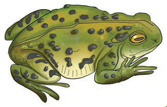

Amphibians
Amphibians are vertebrates that live in water and on land. Most animals in this group live in water during the early stages of their development. Examples of amphibians include frogs and toads. Figure 12 shows examples of amphibians.

(a)

(b)
Figure 12: Amphibians